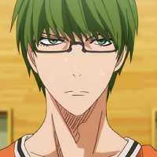
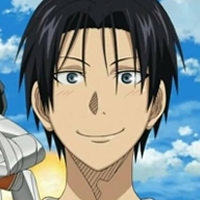
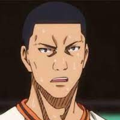
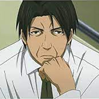

公式サイトへ
秀徳高校
前年度全国ベスト8に入る実績を持つ東京都不動の三大王者の一角で、「東の王者」「歴戦の王者」と呼ばれる強豪校。
バスケ部には他校の試合撮影部隊も存在。提言は「不撓不屈」。
(ピクシブ百科事典より)
緑間
みどりま
真太郎
しんたろう

高尾
たかお
和成
かずなり

大坪
おおつぼ
泰介
たいすけ
宮地
みやじ
清志
きよし
木村
きむら
信介
しんすけ

中谷
なかたに
仁亮
まさあき

トップページに戻る